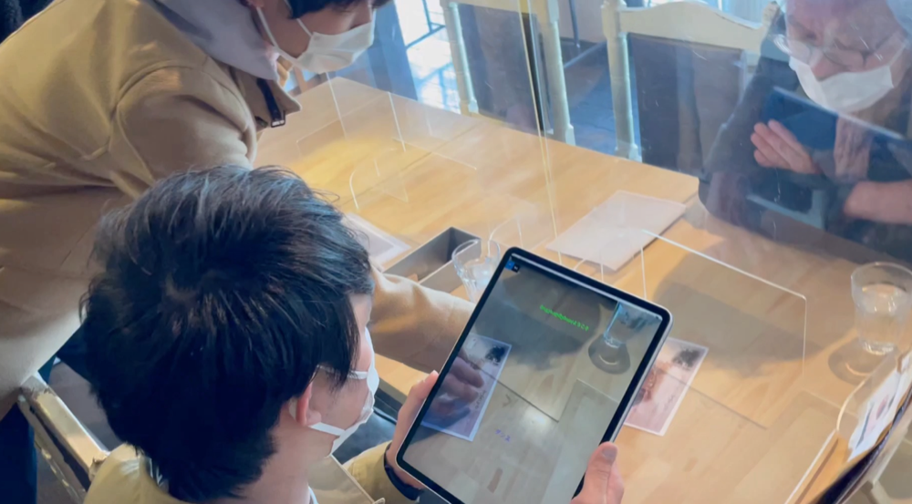
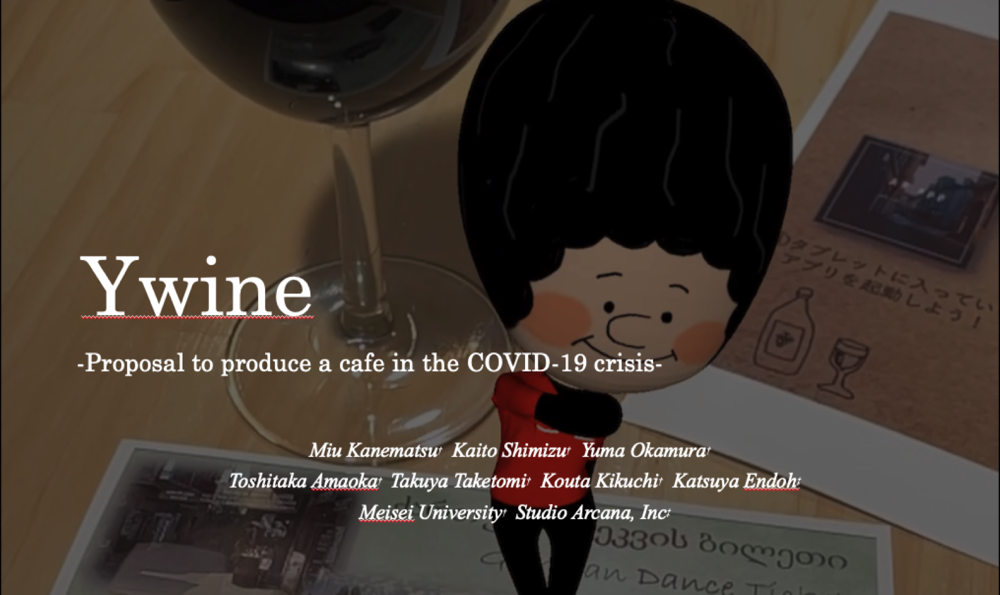
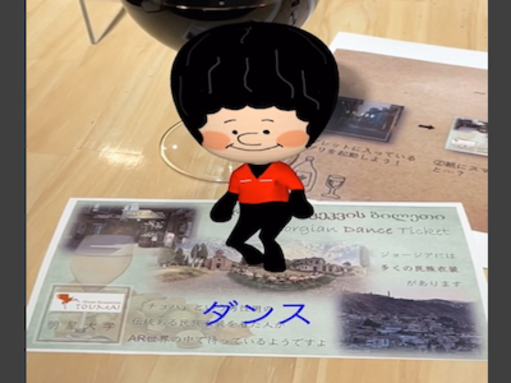

Ywine

YouTubeで動画を開くTechnology
- Xcode (ARkit)
- Blender
- TinkerCAD
3年生通年の授業で行った内容。コロナ禍でお客さんが減ってしまったカフェをプロモーションするため、情報学部と国際コミュニケーション学部が協力して開発を行なった。
３つのグループに分かれて開発が行われ、私のグループでは、販売されているワインに注目し、ワインの本場であるジョージアの宴会”スープラ”を体験できるARアプリを開発した。
ジョージアの伝統衣装をきてダンスを踊る”チョハくん”や伝統楽器などのモデルがARで表示され、新たなワインの試飲体験を提案した。
実際のカフェで使用していただき訪れたお客さんにも体験していただくことができた。
Ywineは「わいわいとワインを飲んでもらいたい」という願いと、「Yの形がワイングラスに似ている」ことから命名した造語である。

